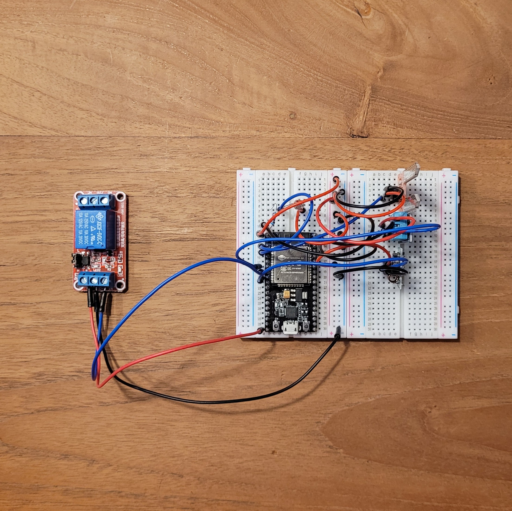

Tijdens het vak "Smart Technology" heb ik geleerd hoe een microcontroller, zoals
de ESP32, werkt. Door gebruik te maken van een zogeheten "Breadboard" kan de microcontroller
eenvoudig aangesloten worden op verschillende sensoren. Het uiteindelijke doel hierbij
is om een plant geautomatiseerd van de juiste hoeveelheid water en licht te voorzien.
De microcontroller is op het breadboard geplaats, samen met een bodemvochtigheidssensor,
DHT (digital temperature/humidty) sensor, een lichtgevoelige weerstand (LDR) en een
RF-transmitter. Door deze sensoren uit te lezen en in de programmatuur te koppelen aan
bepaalde voorwaarden, kan de microcontroller verschillende acties aansturen.
Op het breadboard is ook een relais geplaatst, welke door de microcontroller aangestuurd
kan worden. Aan dit relais wordt een pompje gekoppeld welke de plant van water kan voorzien.
Ook wordt er gebruik gemaakt van een zogeheten "KlikAanKlikUit-schakelaar". Deze
schakelaar kan in het stopcontact geplaatst worden en wordt dan op afstand aangestuurd.
Voor het aansturen van deze schakelaar is een radiosignaal nodig, deze wordt uitgezonden
door de RF-transmitter. De schakelaar in het stopcontact schakelt een lamp, welke voor
extra licht zorgt als dit nodig is.

Om het geheel werkend te krijgen moet de microcontroller weten wat het moet uitvoeren. Met het
programma "Visual Studio Code" heb ik een code geschreven in de programmeertaal C++. De code bestaat
uit meerdere regels, welke van boven naar beneden uitgevoerd worden.
Rechts is de code waarmee ik de microcontroller geprogrammeerd heb.
#include
#include "switchKaKu.h"
#include "DHT.h"
#define DHTPIN 32
#define DHTTYPE DHT11
#define TRANSMITTERID1 190826
#define rfPin 25
#define ledPin 2
DHT dht(DHTPIN, DHTTYPE);
//Set pin number
const int ldrPin = 39;
int moistSensPin = 36;
int moistValue = 0;
int pumpPin = 33;
int lightInitial;
int lightValue;
int humidity;
int temperature;
/*************************************************************
This is a simple demo of sending and receiving some data.
Be sure to check out other examples!
*************************************************************/
// Template ID, Device Name and Auth Token are provided by the Blynk.Cloud
// See the Device Info tab, or Template settings
#define BLYNK_TEMPLATE_ID "TMPL2SooU0Q2"
#define BLYNK_DEVICE_NAME "Quickstart Device"
#define BLYNK_AUTH_TOKEN "mKHLov39TKS7lJRNhPOtU1GEwUKw42gh"
// Comment this out to disable prints and save space
#define BLYNK_PRINT Serial
#include
#include
#include
char auth[] = BLYNK_AUTH_TOKEN;
// Your WiFi credentials.
// Set password to "" for open networks.
char ssid[] = "Hotspot Jelle";
char pass[] = "Wifi0000";
BlynkTimer timer;
// This function is called every time the Virtual Pin 0 state changes
BLYNK_WRITE(V0)
{
// Set incoming value from pin V0 to a variable
int value = param.asInt();
// Update state
Blynk.virtualWrite(V1, value);
}
// This function is called every time the device is connected to the Blynk.Cloud
BLYNK_CONNECTED()
{
// Change Web Link Button message to "Congratulations!"
Blynk.setProperty(V3, "offImageUrl", "https://static-image.nyc3.cdn.digitaloceanspaces.com/general/fte/congratulations.png");
Blynk.setProperty(V3, "onImageUrl", "https://static-image.nyc3.cdn.digitaloceanspaces.com/general/fte/congratulations_pressed.png");
Blynk.setProperty(V3, "url", "https://docs.blynk.io/en/getting-started/what-do-i-need-to-blynk/how-quickstart-device-was-made");
}
// This function sends Arduino's uptime every second to Virtual Pin 2.
void myTimerEvent()
{
moistValue = analogRead(moistSensPin);
lightValue = analogRead(ldrPin);
humidity = dht.readHumidity();
temperature = dht.readTemperature();
// You can send any value at any time.
// Please don't send more that 10 values per second.
Blynk.virtualWrite(V2, millis() / 1000);
Blynk.virtualWrite(V5, moistValue);
Blynk.virtualWrite(V6, lightValue);
Blynk.virtualWrite(V7, humidity);
Blynk.virtualWrite(V8, temperature);
}
void setup()
{
pinMode(ledPin, OUTPUT);
// Debug console
Serial.begin(9600);
Blynk.begin(auth, ssid, pass);
// You can also specify server:
//Blynk.begin(auth, ssid, pass, "blynk.cloud", 80);
//Blynk.begin(auth, ssid, pass, IPAddress(192,168,1,100), 8080);
// Setup a function to be called every second
timer.setInterval(1000L, myTimerEvent);
}
void loop()
{
Blynk.run();
timer.run();
// You can inject your own code or combine it with other sketches.
// Check other examples on how to communicate with Blynk. Remember
// to avoid delay() function!
}
BLYNK_WRITE(V4)
{
if (param.asInt()==1) {
digitalWrite(ledPin, HIGH);
}else {
digitalWrite(ledPin, LOW);
}
}
De microcontroller genereerd veel data. Deze data is, behalve als de microcontroller aan een PC gekoppeld is, niet uit te lezen.
Om deze data uit te kunnen lezen en de microcontroller te kunnen monitoren wordt gebruik gemaakt van "Blynk".
Met Blynk kan de microcontroller over een wifi-netwerk data uitwisselen met de server. Dezelfde server is via wifi ook bereikbaar
voor andere apparaten, zoals en laptop of smartphone. Op de website van Blynk, en in de app, heb ik een dashboard vormgegeven.
Hierop is zichtbaar wat de meetwaarden zijn van de sensoren, en kan ik op afstand een LED-lampje aansturen die op de
microcontroller bevestigd zit.
In de afbeelding hieronder is een afbeelding van het dasboard te zien. Hierop kunnen de gemeten waarden afgelezen worden.
Zo'n zelfde dashboard, zie afbeelding rechts, is ook op de smartphone zichtbaar middels de Blynk app.

In de derde week van minor ging de eerste workshop van "Additive Manufacturing" van start. De hiervoor genoemde
term is een verzamelnaam voor alle verschillende 3D-print-technieken. De workshops worden verzorgd door
Herold Cremer, specialist op het gebied van additive manufacturing.
Workshop 1 _15 september
In de eerste workshop werd er kennis gemaakt met 3D-printen. Voor mij is dit een bekend begrip en redelijk
bekende productiemethode. Er werd meer verteld over wat 3D-printen inhoudt en welke toepassingen er zijn.
Voor mij was dit geen nieuw verhaal, omdat ik in mijn opleiding werktuigbouwkunde eerder kennis gemaakt heb
met deze techniek. Tijdens de workshop werd ook dieper ingegaan over het proces in de software die benodigd
is om van een 3D-model een werkbaar bestand voor de printer te maken. Wederom was dit voor mij geen nieuw
verhaal.
Tijdens deze workshop hebben we ook een kijkje genomen in het fablab van de Hogeschool Arnhem Nijmegen. Hier
konden we een kijkje nemen bij de 3D-printers en werd wat uitleg gegeven over de werking van de verschillende
printers.
De workshop was voor mij een herhaling, hierdoor vond ik het niet heel interessant. Echter was de workshop wel
zinvol omdat ik alles dan weer fris in het geheugen heb voor als we straks zelf iets gaan 3D-printen.
Workshop 2 _29 september
Tijdens de tweede workshop over Additive Manufacturing heb ik meer informatie gekregen over de
beschikbare print-technieken. Hierbij werd vooral toegelicht hoe de technieken werkten, wat de mogelijkheden
met de technieken zijn en de daarbij behorende voor- en nadelen. Voor mij als toekomstig engineer was het
zinvolle informatie, zeker met de voordelen van 3D-printen ten behoeve van prototyping.
Daarna kregen we een spoedcursus SolidWorks. Echter ben ik al ver bekend met deze software. Dus de
uitleg was voor mij niet nodig. Ik heb niet actief meegedaan aan de uitleg en heb de keuze gemaakt om deze
tijd nuttig te besteden aan de bouw van mijn portfolio en het helpen van anderen die nog weinig ervaring
hebben met SolidWorks.
Workshop 3 _datum
empty
Workshop 4 _datum
empty
Gebonden stikstof met in oppervlaktewater
Ik heb een bezoek gebracht aan ICT-valley in Wageningen. Hier werden we ontvangen met een presentatie over een bedrijf dat
een apparaat ontwikkelt die de hoeveelheid gebonden stikstof kan meten in oppervlaktewater. Ik was een beetje verward over het
ontvangst omdat ons verteld was dat we een rondleiding kregen door een bedrijf. Desalniettemin was de presentatie best interessant.
In de presentatie werd eerst vooral de businesskant belicht van het apparaat en het bedrijf zelf. Later werd ook de technische kant
van het apparaat besproken. Ik vond de businesskant niet zo boeiend, maar dat heeft er vooral mee te maken dat ik het niet zo goed
kan volgen. Ik beschik simpelweg niet over de kennis om alles te begrijpen, en daarom blijft het verhaal niet altijd hangen en heb
ik er persoonlijk niet zo veel aan.
Sharing innovation: Digital Twin
Na het ontvangst en de presentatie gingen we naar het "Sharing-Innovation"-event. Hier werd door verschillende sprekers verteld
over digital twin, en hoe zij het gebruikten in hun bedrijf. Ik vond het event een kleine teleurstelling. Het was wederom een erg
business gerelateerd verhaal met weinig diepgang naar de technische kant, iets wat ik zeker verwacht had tijdens dit event. Na
afloop van de presentaties vond nog een netwerkborrel plaats. Hier heb ik bewust niet aan deelgenomen omdat ik vond dat deze
borrel voor mij niet zo relevant was.